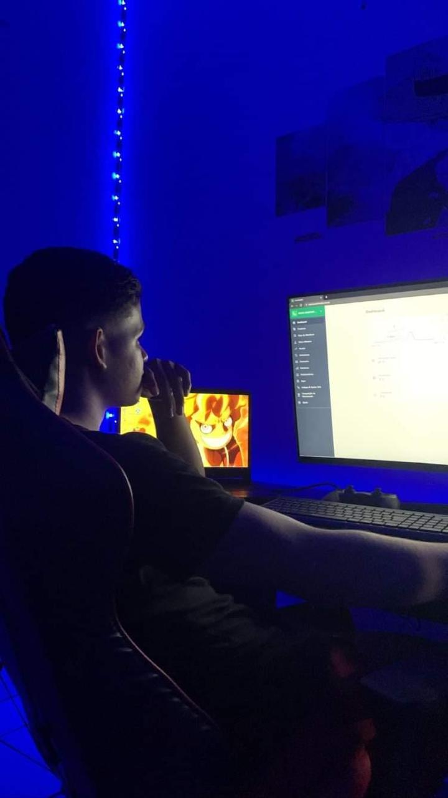
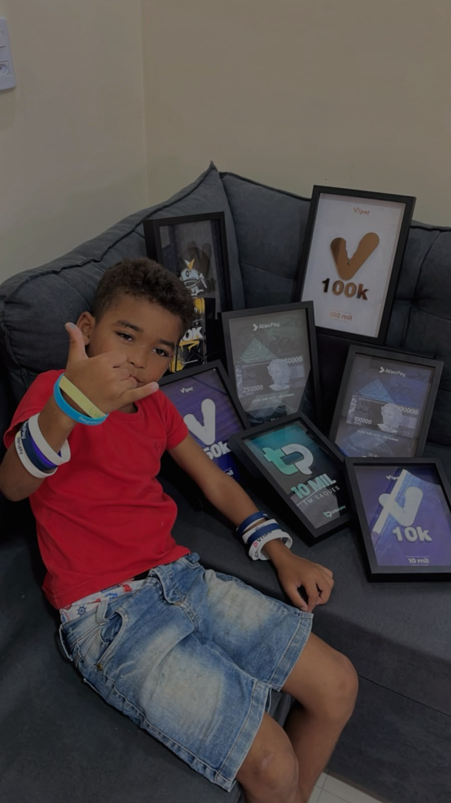

Gestão de mídia
Meta Ads como foco principal, com experiência também em TikTok Ads e Kwai. Leitura de métricas e acompanhamento das campanhas.
Kauã Martins / Gestor de tráfego
Construí minha experiência em operações próprias. Agora, quero levar essa bagagem para dentro da sua operação de direct response.
Conversar sobre uma vagaObcecado por resultados · Viro noites · Posso mudar de cidade

01 / EXPERIÊNCIA NA PRÁTICA
Da campanha ao rastreamento, fui responsável pelo tráfego das minhas próprias operações, com atuação no Brasil e no exterior.
de experiência no mercado
experiência de ponta a ponta em direct response
experiência com tráfego direto em diferentes mercados

BAGAGEM DE QUEM JÁ EXECUTOU
Gerenciei mídia, analisei métricas, testei criativos e cuidei do rastreamento e das integrações que conectavam a operação.
As placas fazem parte dessa trajetória. São reconhecimentos de plataformas, com marcos de vendas e saques — não uma soma de faturamento nem uma medida de lucro.
Conheça meu repertório02 / O QUE LEVO PARA A OPERAÇÃO
Meta Ads como foco principal, com experiência também em TikTok Ads e Kwai. Leitura de métricas e acompanhamento das campanhas.
Testes de criativos, identificação de peças validadas e desdobramento em variações para explorar oportunidades de escala.
Experiência com Utmify, UTMs, parâmetros de URL e integrações com APIs de pagamentos para conectar informações da operação.
Automações de fluxos com n8n, uso de IA no trabalho e experiência com estruturas de contingência em operações próprias.
03 / COMO EU ENCARO O TRABALHO
Quero fazer parte de uma operação em que dedicação, responsabilidade e resultado tenham espaço para crescer.
Sou obcecado por resultados e gosto de trabalhar. Viro noites quando o desafio exige, desde que dedicação e entrega sejam reconhecidas e recompensadas.
Busco uma posição fixa PJ, com remuneração fixa + variável. Tenho disponibilidade integral. Posso trabalhar remotamente ou mudar de cidade pela oportunidade certa.
SE SUA OPERAÇÃO É DE DIRECT RESPONSE, VAMOS CONVERSAR.
Busco integrar uma equipe de infoprodutos ou nutra.
Me conte sobre a operação, o desafio e a vaga.